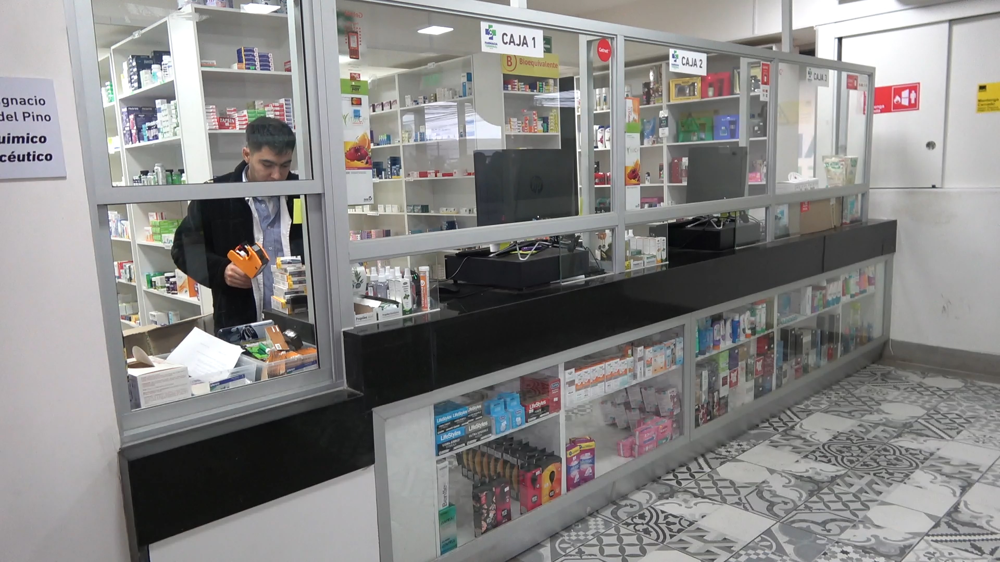
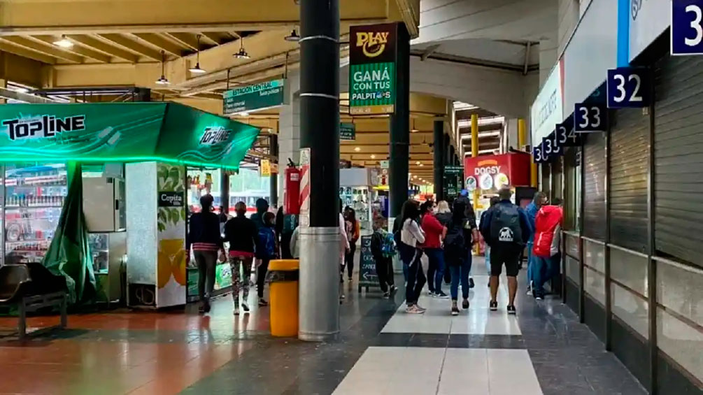
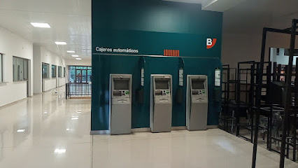
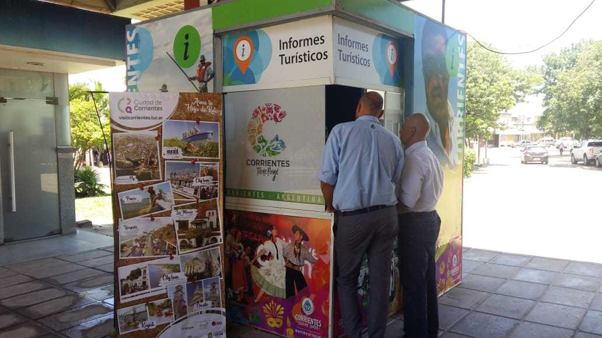
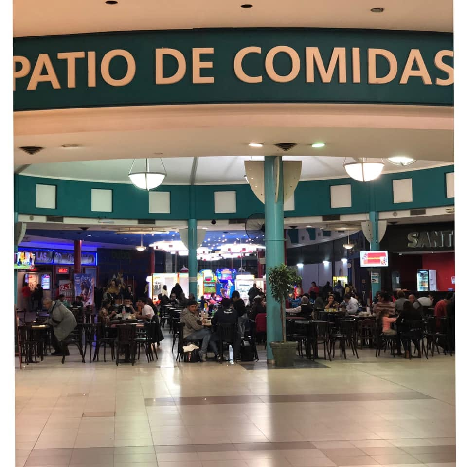

NEXO TRANSPORT HUB
Planificá viajes, consultá servicios y encontrá la mejor forma de llegar a tu destino desde una única plataforma digital.
Accesos Rápidos
Volver a la Consultora
📍 Ubicación del Centro de Transporte
El Centro de Transporte Nexo se encuentra ubicado en la Terminal de Ómnibus General Manuel Belgrano, sobre Av. Brígido Terán, San Miguel de Tucumán, con acceso inmediato a las principales avenidas de la ciudad.
📍 Ubicación del Centro de Transporte
El Centro de Transporte Nexo opera desde la Terminal de Ómnibus General Manuel Belgrano, ubicada sobre la Av. Brígido Terán en la ciudad de San Miguel de Tucumán.
Su ubicación estratégica permite una rápida conexión con los principales medios de transporte de la provincia, integrando servicios de ómnibus de larga y media distancia, transporte urbano, taxis y remises.
Locales y Servicios

🍔 Patio Gastronómico
Espacio con cafeterías, comidas rápidas y confitería para los pasajeros.

💊 Farmacia
Venta de medicamentos, productos de higiene y primeros auxilios.

🛒 Kiosco
Bebidas, golosinas, diarios y artículos de viaje.

🏧 Cajero Automático
Extracción de efectivo y operaciones bancarias.

ℹ Oficina de Información
Asistencia, consultas y orientación para los pasajeros.

🎁 Regalería
Artículos regionales, recuerdos y regalos.
🏪 Locales y Servicios
La Terminal de Ómnibus General Manuel Belgrano dispone de diversos locales y servicios para brindar mayor comodidad a los pasajeros durante su estadía.

🍔 Patio Gastronómico
Espacio destinado a cafeterías, confiterías y comidas rápidas para que los pasajeros puedan desayunar, almorzar o cenar durante su espera.
💊 Farmacia
Servicio de venta de medicamentos, productos de higiene personal y artículos de primeros auxilios para los viajeros.
🛒 Kiosco
Venta de bebidas, golosinas, diarios, revistas, snacks y artículos de uso cotidiano para los pasajeros.
🏧 Cajero Automático
Cajero de la Red Link/Banelco disponible para extracción de efectivo y operaciones bancarias durante todo el día.
ℹ️ Centro de Información
Atención personalizada para consultas sobre servicios, ubicación de andenes, horarios y orientación dentro de la terminal.